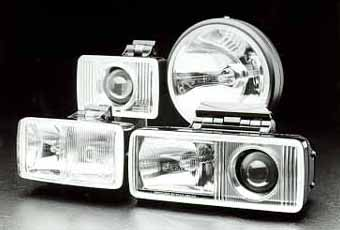

Cibie is well established as Europe's finest lighting manufacturer, having proven its superior quality and performance at LeMans, Sebring, Monte Carlo and Baja. Cibie offers a lamp to server every purpose; a lamp to satisfy every driving need. The light source in efficient long lasting bulbs available today. The Cibie reflector is precision stamped metal finished with vaporized aluminum. Molded from the finest crystal, the lens is computer designed for precise light beam control and laser-tested for accuracy.
CIBIE HEADLIGHTS
All Cibie European Code halogen headlamps are designed to the same high quality and claim the same precision optics as the auxiliary lamps. Each light is designed so the transition from light to dark is ever so gradual.